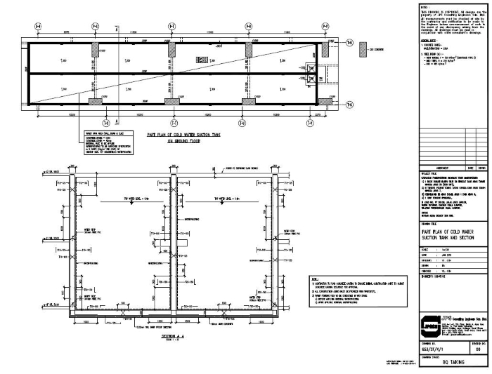

Life as a trainee at JPS Consulting Engineers
December 2020 ~ February 2021 (3 months)
Throughout the industrial training, there were various tasks assigned to me, including reinforced concrete (RC) beams and slabs design, domestic cold water suction tank design and detailing, pile caps design and RC columns, shear wall load taking practice. Minor tasks include checking of drawings, steel poundage calculations and checking of test results (cube test, soil investigation logs, et cetera.). I also gained opportunity to join site inspections, meetings with Clients and contractors.
As an example, I designed the entire reinforcements (beams, slabs, walls) for the above RC water tank, following BS8110 and BS8007 design codes.
Impacts
Upon completion of this industrial training, I asked myself the following three questions, while self-reflecting what I have learnt:
Throughout these 12 weeks of industrial training, I did contribute positive efforts towards JPSCE. Although tasks assigned are relatively heavy, challenging, and tremendous, I was able to finish the works given on time and even earlier. I mainly found handling tasks given on my own to help shape independence and confidence, and time management skills.
However, there were a few noticeable hurdles and hardships faced during my internship. Firstly, the design standards used during my training are British Standards, but what I learnt at Monash University are Australian Standards. Nevertheless, I tried to overcome this difficulty by comparing both design standards and practising a lot with some examples found online, and I turned out to be more comfortable with the implementation of the different design standards. Secondly, the design engineers in my workplace are fully occupied with time and could hardly spare free time mentoring me than university, where I could approach lecturers whenever I faced problems. Nonetheless, this is not considered depriving as I could work on my own to solve my problems and only ask when it is necessary.
I learnt a lot of extra-curricular skills and critical thinking. By getting exposed to the actual working industry environment got me prepared for future endeavour. On top of these, I also realised that “work-life balance” is relatively essential, especially for a full-time workforce. In addition, a team of people with great working chemistry and communication is of most crucial amongst all.